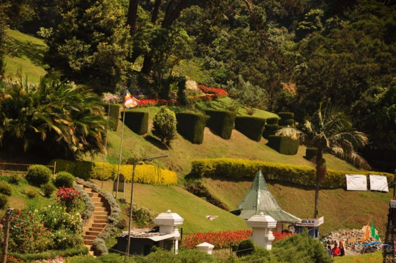
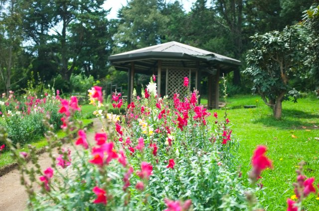
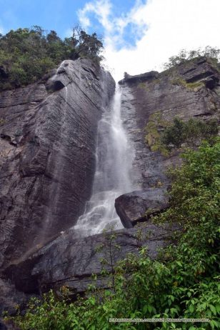

Nuwara Eliya
Gregary wewa
.jpg)
Lake Gregory , sometimes also called Gregory Lake or Gregory Reservoir, is a reservoir in heart of the tea country hill city, Nuwara Eliya, Sri Lanka. Lake Gregory was constructed during the period of British Governor Sir William Gregory in 1873.[2] The lake and the surrounding area make up the Gregory Lake Area.
The area was originally a swampy bog at the foot of the small hills that border the town. In 1873 Sir William Gregory authorised the damming of the Thalagala stream, which originates from Mount Pidurutalagala,[3] in order to make more land available for the expansion of the town.[4] In 1881 the lake was stocked with trout by Mr C. J. R. Le Mesurier (Assistant Government Agent for Nuwara Eliya).[5][6] In 1913 the waters of the lake were directed into a tunnel which flows to a hydro power station at 'Blackpool' between the town and Nanu Oya.[7] The power station continues to supply electricity to the town to this day. In British times Lake Gregory was used for water sports and recreational activities.

Hakgala
Hakgala Mountain is situated in the Nuwara Eliya district of Sri Lanka at 2,169 m (7,116 ft) above mean sea level, most parts of the mountain are covered with forest belonging to Hakgala Strict Nature Reserve. Hakgala Botanical Garden is situated on the northeastern slope of the Hakgala Mountain. The southwestern side of the mountain has a wet climate compared to northeastern slope since southwestern part faces directly to southwest Monsoon. According to the native language of Sri Lanka – Sinhala, the name of the mountain hakgala’ has the meaning of jaw-rock. Jaw rock is related to a story in the epic Ramayana. According to the legend, Hanuman the Monkey God had been sent by Rama to the Himalayas to find a particular medical herb to rescue Sita from the demon king Ravana. When Hanuman arrived at the Himalayas he had forgotten which herb he was looking for and he had decided to bring a chunk of the Himalayas back in his jaw, hoping that particular herb was growing on it. Legend says that Hakgala Mountain was formed by the chunk of rock brought from the Himalayas by Hanuman. Victoriya Park
The Victoria Park is a public park located in Nuwara Eliya, next to the Nuwara Eliya Post Office in Sri Lanka.[1] Originally the park was the research field of Hakgala Botanical Garden. The park was formally named in 1897 to commemorate Queen Victoria's Diamond Jubilee.[2] The park was established with the planting of its first tree, an Oak, by a visiting German Princess. The Nanu Oya River runs through the park, creating a number of small lakes. A number of rare bird species can be found in the park. At the far end of the park is a small children's playground and miniature ridable railway.
Victoria Park is old, as in extremely old. It was initially the research field for the Hakgala Botanical Garden, but was renamed after Queen Victoria in 1897. It covers a pretty large area spanning over 25 acres. The park is open year-round but the best times to visit it is during the flowering seasons from March to May and August to September.
Lovers leap waterfall
This beautiful 30m high Lovers Leap fall in Nuwara Eliya is incipient of the streams and brooks of Sri Lanka’s highest mountain, the Piduruthalagala (2524m). It flows over hard granite ledges and the water is collected in a tank and used for drinking.
In dry spells, the flow is languid The fall is said to derive its name from the tragic tale of a prince, who while hunting in the jungle, lost his way. He was rescued by a beautiful damsel, and the two became inseparable lovers. But the match was not to the liking of the prince’s subjects, so the two decided to immortalise their love by leaping from the top of the fall to their death.
The waterfall lies about 3 km from the Nuwara Eliya town. Once you go through the winding roads up to the lane which leads to the waterfall, you can either take a 3 wheeler which will take you halfway to the falls and from there its a fairly even gravel path to the falls. The distance is approx 250 meters. Else you could walk from the road. Its about 400 meters uphill walk along a narrow tar road and you can to take a shortcut through a tea estate. This is a fairly steep climb of about 4oo meters but little more adventurous.